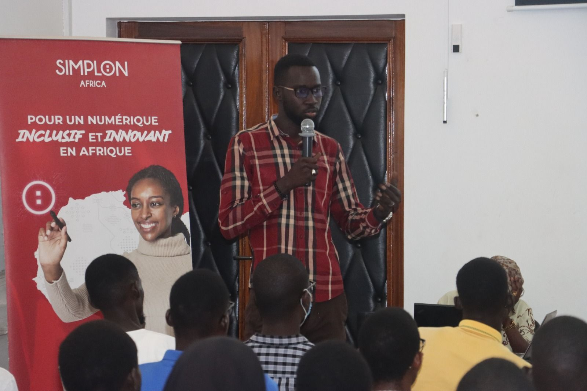

En tant que coach, j'ai le privilège passionnant d'accompagner des milliers de jeunes et professionnels dans un monde du digital en constante évolution. Mon rôle est de les guider pour qu'ils trouvent leur voie, découvrent leurs passions et développent des compétences essentielles.
Au-delà des hardskills, j'encourage le développement des softskills comme la pensée critique, la résolution de problèmes et la creativité. Ma mission est de créer un environnement d'apprentissage stimulant et bienveillant où ils peuvent challenger, expérimenter et apprendre de leurs erreurs grâce à une pédagogie active learningByDoing.
Chaque jeune, professionnel ou frère que j'accompagne est un
individu extraordinaire avec un potentiel illimité. Mon devoir est
de les inspirer, de les encourager à sortir de leur zone de
confort et à repousser leurs limites. Ensemble, nous construisons
des ponts entre leurs rêves et la réalité, les aidant ainsi à
bâtir une #carrière épanouissante dans le monde du digital et à
contribuer au développement économique du Sénégal.
🥰 Ensemble, continuons à impacter des vies 🤌